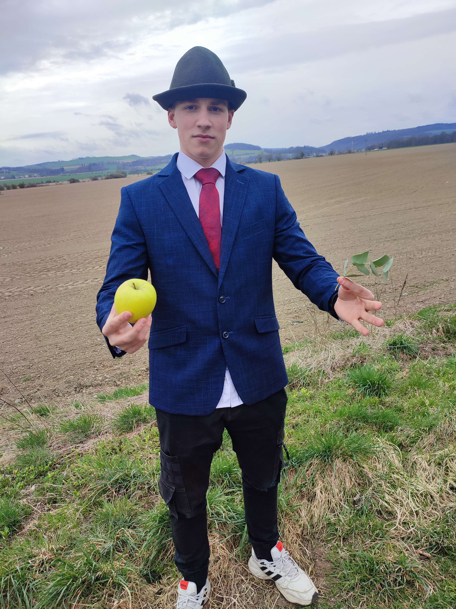
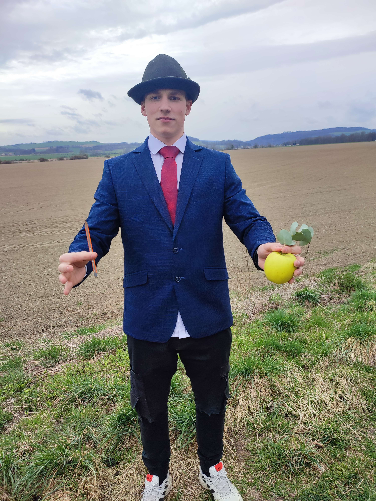
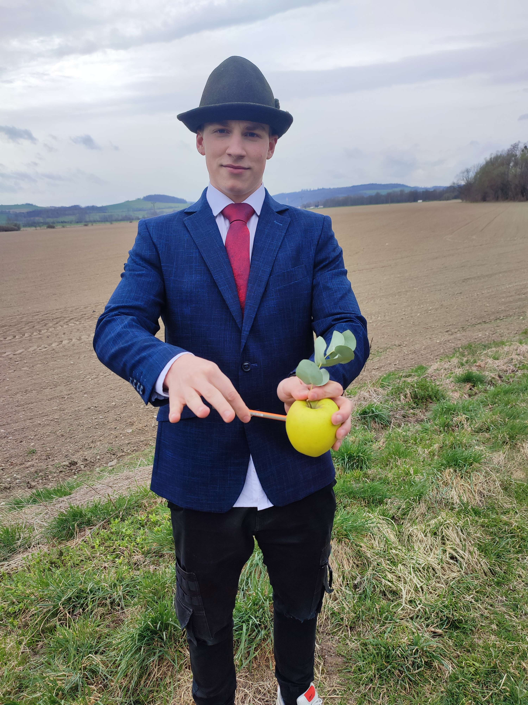
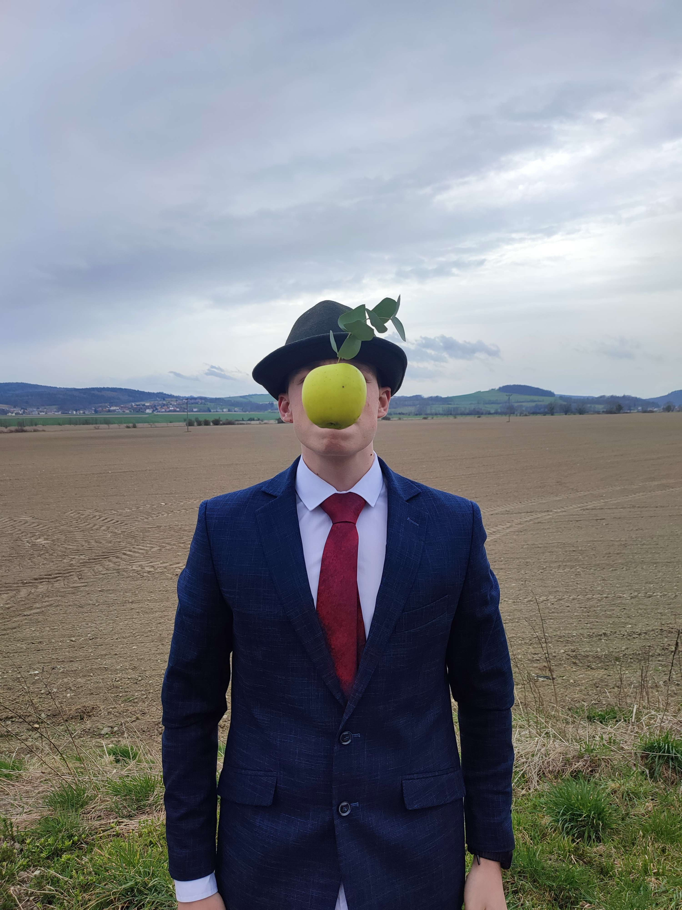

Zde můžete vidět obraz od René Magritte, který jsme se rozhodli napodobit
jakožto součásít REMAKE projektu.
Na dalších kartách můžete vidět průběh výroby naší napodoběniny.
Zde byl přidán list k jablku
Zde byla přidána tužka
Zde byla tužka vražena do jablka a následovně držena v mých ústech než se zhotovila fotografie.
Zde je naše verze REMAKE Projektu.
